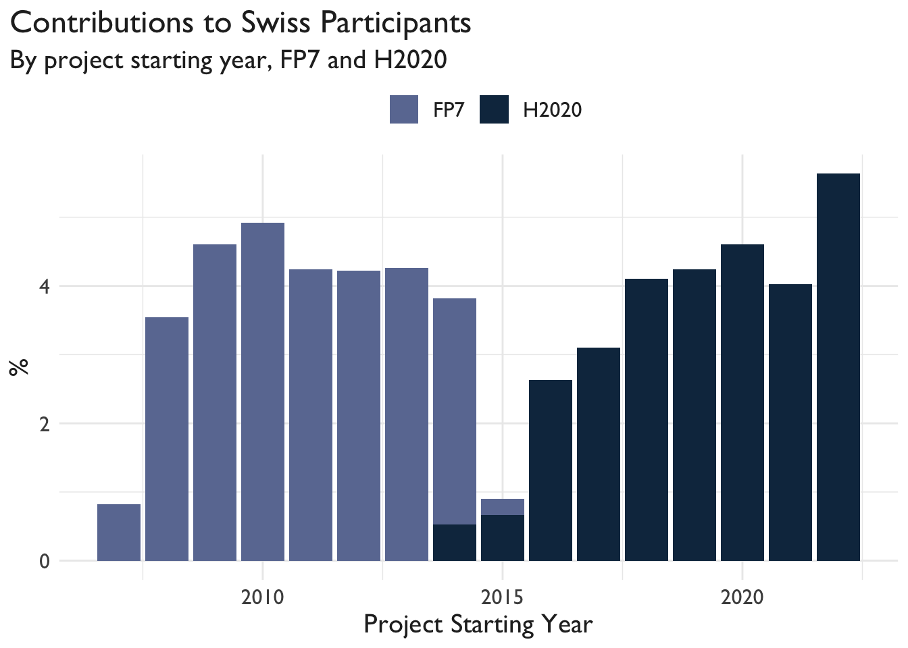
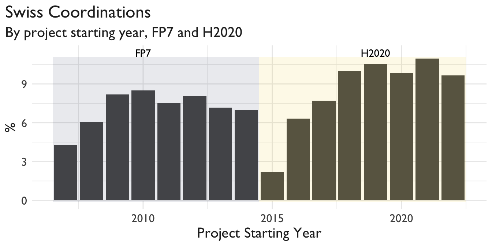
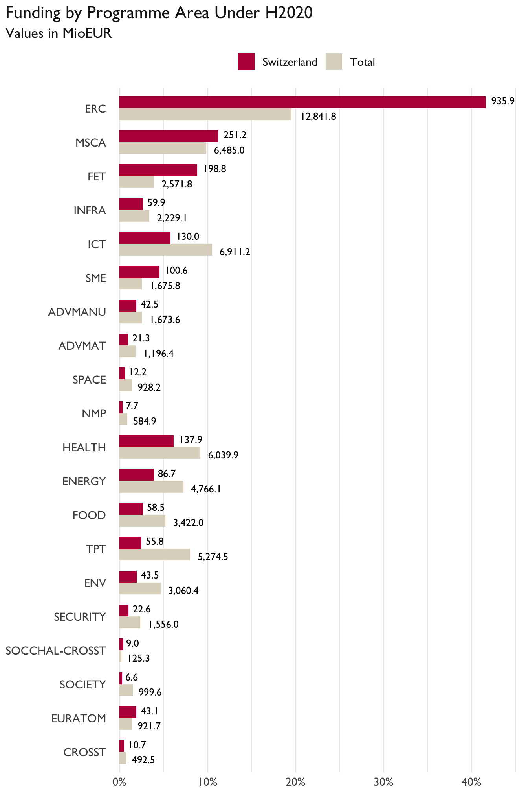

Reproducibility analylsis of SERI figures
João Martins
# source code: https://github.com/zambujo/swissparticipation
library(tidyverse)
library(vroom)
library(janitor)
library(lubridate)
library(here)
library(yaml)
library(glue)
library(scales)
library(ggsci)
library(ggrepel)
library(ggtext)
library(reactable)
knitr::opts_chunk$set(message = FALSE, warning = FALSE, comment = FALSE)
source(here("R", "utils.R"))Pease find related statistics on the SERI’s page: Facts and Figures on the Swiss Participation in the EU-Framework Programmes for Research and Innovation.
df_schema <- here("data", "schema-cordis-plus.yml") %>%
read_yaml() %>%
as.list()
df_raw <-
list.files(here("data"), pattern = "cordis-plus-", full.names = TRUE) %>%
vroom(delim = ",", col_types = df_schema)
# map_df(read_csv2, col_types = df_schema)
df_raw <-
df_raw %>%
mutate(
pillar = fct_inseq(pillar),
pillar = fct_rev(pillar),
pillar = fct_relevel(pillar, "Cross-theme", after = 0),
pillar = fct_recode(
pillar, I = "1", II = "2", III = "3", IV = "4", V = "5"),
org_type = fct_collapse(
legal_entity_type,
`Research & Education` = c("HES", "REC"),
`Others (Excl. R&Ed)` = c("PRC", "PUB", "OTH")))
df <- df_raw %>%
mutate(start_semester = floor_date(start_date, "6 months")) %>%
filter(legal_name != "EUROPEAN ORGANIZATION FOR NUCLEAR RESEARCH")Overview
# TODO: annotate the plot:
bar_plt <- function(plt) {
plt +
geom_col() +
theme_minimal() +
theme(
plot.title.position = "plot",
text = element_text(
size = 15,
family = "Gill Sans",
color = "gray15"
)
)
}
get_particip <- function(x, in_programme = "") {
if (in_programme == "FP7") {
x <- x %>%
filter(framework_programme == "FP7")
}
if (in_programme == "H2020") {
x <- x %>%
filter(framework_programme == "H2020")
}
total <- x %>%
count(Semester = start_semester, name = "n_total")
ch <- x %>%
filter(country_code == "CH") %>%
count(Semester = start_semester, name = "n_ch")
left_join(total, ch, by = "Semester") %>%
mutate(year = year(Semester),
share_particip = 100 * n_ch / n_total)
}
get_contrib <- function(x, in_programme = "") {
if (in_programme == "FP7") {
x <- x %>%
filter(framework_programme == "FP7")
}
if (in_programme == "H2020") {
x <- x %>%
filter(framework_programme == "H2020")
}
to_all <- x %>%
group_by(Semester = start_semester) %>%
# summarise(contrib_all = sum(ec_contribution, na.rm = TRUE))
summarise(contrib_all = sum(net_ec_contribution, na.rm = TRUE))
to_ch <- x %>%
filter(country_code == "CH") %>%
group_by(Semester = start_semester) %>%
# summarise(contrib_ch = sum(ec_contribution, na.rm = TRUE))
summarise(contrib_ch = sum(net_ec_contribution, na.rm = TRUE))
left_join(to_all, to_ch, by = "Semester") %>%
mutate(year = year(Semester),
share_contrib = 100 * contrib_ch / contrib_all)
}
get_coord <- function(x, in_programme = "") {
if (in_programme == "FP7") {
x <- x %>%
filter(framework_programme == "FP7")
}
if (in_programme == "H2020") {
x <- x %>%
filter(framework_programme == "H2020")
}
all <- x %>%
filter(partner_role == "Coordinator") %>%
count(Semester = start_semester, name = "coord_total")
ch <- x %>%
filter(country_code == "CH") %>%
filter(partner_role == "Coordinator") %>%
count(Semester = start_semester, name = "coord_ch")
left_join(all, ch, by = "Semester") %>%
mutate(year = year(Semester),
share_contrib = 100 * coord_ch / coord_total)
}The SERI finds higher shares of contributions to Swiss participants.
Contribution to Swiss Participants
df %>%
get_contrib() %>%
ggplot(aes(x = year, y = share_contrib)) %>%
bar_plt() +
labs(
title = "Contributions to Swiss Participants",
subtitle = "By project starting year, FP7 and H2020",
x = "Project Starting Year",
y = "%"
)
df %>%
get_contrib(in_programme = "FP7") %>%
select(contrib_ch, contrib_all) %>%
summarise_all(sum, na.rm = TRUE) %>%
mutate(share = round(100 * contrib_ch / contrib_all, 1))FALSE # A tibble: 1 × 3
FALSE contrib_ch contrib_all share
FALSE <dbl> <dbl> <dbl>
FALSE 1 26336937475 779766907376 3.4df %>%
get_contrib(in_programme = "H2020") %>%
select(contrib_ch, contrib_all) %>%
summarise_all(sum, na.rm = TRUE) %>%
mutate(share = round(100 * contrib_ch / contrib_all, 1))FALSE # A tibble: 1 × 3
FALSE contrib_ch contrib_all share
FALSE <dbl> <dbl> <dbl>
FALSE 1 60153059842 2176408626018 2.8Swiss Coordinations
df %>%
get_coord() %>%
ggplot(aes(x = year, y = share_contrib)) %>%
bar_plt() +
labs(
title = "Swiss Coordinations",
subtitle = "By project starting year, FP7 and H2020",
x = "Project Starting Year",
y = "%"
)
df %>%
get_coord(in_programme = "FP7") %>%
select(coord_ch, coord_total) %>%
summarise_all(sum, na.rm = TRUE) %>%
mutate(share = round(100 * coord_ch / coord_total, 1))FALSE # A tibble: 1 × 3
FALSE coord_ch coord_total share
FALSE <int> <int> <dbl>
FALSE 1 1002 25613 3.9df %>%
get_coord(in_programme = "H2020") %>%
select(coord_ch, coord_total) %>%
summarise_all(sum, na.rm = TRUE) %>%
mutate(share = round(100 * coord_ch / coord_total, 1))FALSE # A tibble: 1 × 3
FALSE coord_ch coord_total share
FALSE <int> <int> <dbl>
FALSE 1 1422 35291 4H2020 Figures
Figure 4 (Original)
, in relation to total funding")
The above figure updates Figure 17 in page 30 but the figures are difficult to compare. According to the H2020 dashboard, the figures are the following:
Figure 4 (Updated)
get_contrib_area <- function(x) {
x <- x %>%
filter(framework_programme == "H2020") %>%
filter(!is.na(thematic_priority_abbr))
to_all <- x %>%
group_by(Area = thematic_priority_abbr) %>%
summarise(contrib = sum(eu_contribution, na.rm = TRUE)) %>%
mutate(
share = contrib / sum(contrib),
context = "Total")
to_ch <- x %>%
filter(country_code == "CH") %>%
group_by(Area = thematic_priority_abbr) %>%
summarise(contrib = sum(eu_contribution, na.rm = TRUE)) %>%
mutate(
share = contrib / sum(contrib),
context = "CH")
bind_rows(to_all, to_ch)
}
pal <- c("#B91646", "#DFD8CA") %>% rev()
pillar_area_lookup <- df %>%
filter(framework_programme == "H2020") %>%
count(Pillar = pillar, Area = thematic_priority_abbr) %>%
filter(!is.na(Area)) %>%
select(-n)
area_labels <- df %>%
get_contrib_area() %>%
filter(context == "CH") %>%
left_join(pillar_area_lookup, by = "Area") %>%
arrange(desc(contrib)) %>%
slice_head(n = 20) %>%
arrange(desc(Pillar), desc(contrib)) %>%
select(Area)
contribs <- df %>%
get_contrib_area() %>%
select(-share) %>%
mutate(
contrib = round(1e-6 * contrib, 1),
contrib = format(contrib, big.mark = ",", decimal.mark = ".", trim = TRUE))
area_labels %>%
left_join(get_contrib_area(df), by = "Area") %>%
select(-contrib) %>%
pivot_wider(names_from = context, values_from = share) %>%
pivot_longer(cols = c("Total", "CH"), names_to = "context", values_to = "share") %>%
left_join(contribs, by = c("Area", "context")) %>%
mutate(
context = str_replace(context, "CH", "Switzerland"),
Area = str_remove(Area, "LEIT-"),
Area = str_remove(Area, "INNOSUP"),
Area = fct_inorder(Area),
Area = fct_rev(Area)) %>%
ggplot(aes(x = Area, y = share, fill = fct_rev(context))) +
geom_bar(stat = "identity", width = .7, position = "dodge") +
geom_text(
aes(label = contrib),
position = position_dodge(width = .9),
hjust = -.25,
size = 3.5,
family = "Gill Sans"
) +
coord_flip() +
scale_fill_manual(values = pal, guide = guide_legend(reverse = TRUE)) +
scale_y_continuous(labels = percent_format(accuracy = 1), expand = c(.1, 0)) +
theme_minimal() +
labs(
title = "Funding by Programme Area Under H2020",
subtitle = "Values in MioEUR")+
theme(
text = element_text(size = 14, family = "Gill Sans", color = "gray10"),
plot.title.position = "plot",
legend.position = "top",
legend.title = element_blank(),
panel.grid.major.y = element_blank(),
axis.title.x = element_blank(),
axis.title.y = element_blank(),
axis.text.y = element_text(margin = margin(0,-25,0,0)))